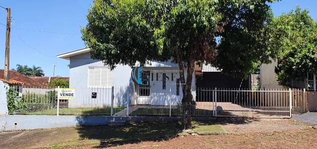
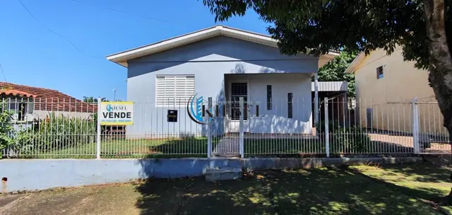
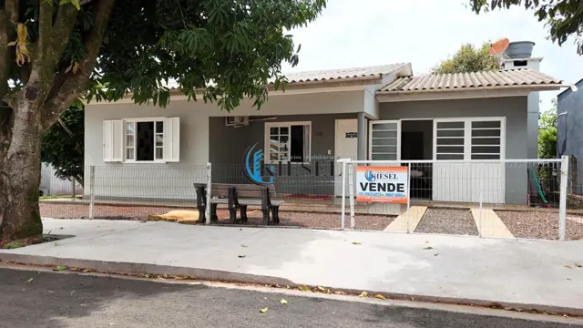
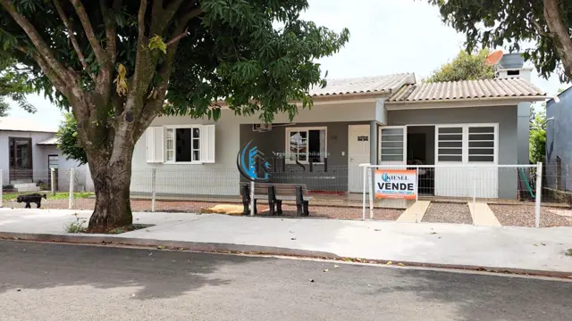
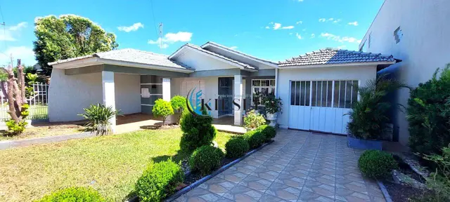
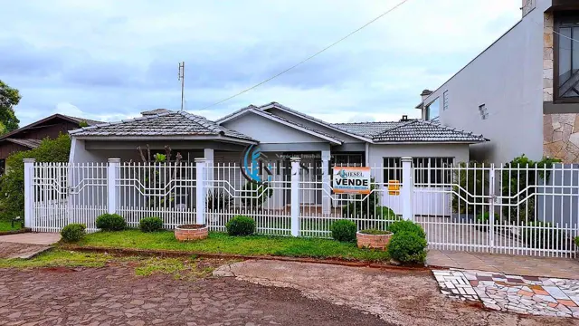

1/10
Casa com 2 quartos, 70 m²
Casa à venda · Santo Antonio · São Martinho/RS · ref. CA0002
R$ 335.000à venda
2quartos
2banheiros
70m² de área
Sobre o imóvel
OPORTUNIDADE PARA ADQUIRIR O SEU IMÓVEL
VENDE-SE
Terreno urbano com área de 373,52 m², com benfeitoria, uma casa de alvenaria com dois pisos com aproximadamente 70 m², contendo:
Primeiro piso, possui:
(02) Dois Dormitórios;
(01) Um banheiro;
Sala/Cozinha;
Térreo, possui:
(01) Um banheiro;
Lavanderia;
Garagem Inacabada;
O imóvel possui pré-laje;
O referido imóvel possui uma piscina instalada medindo 3,5 metros x 7 metros;
Localizado na Rua Cecília Dutra, Bairro Santo Antonio, na cidade de São Martinho/RS.
VALOR: 255.000,00 R$
Para mais informações entre em contato conosco
(55)99947-9495;
(55) 99629-8532;
Características
PiscinaEsgotoÁguaEnergia elétricaCozinhaLavanderiaPiso cerâmico
Atualizado em 28/04/2025. Valores sujeitos a alteração sem aviso prévio.
Veja também
Todas as casas Imóveis semelhantes.


CA0004CasaCasa com 2 quartos, 125 m²
R$ 320.0002 quartos2 banheiros4 vagas125 m²


CA0038CasaCasa com 3 quartos, 109 m²
R$ 365.0003 quartos2 banheiros109 m²


CA0040CasaCasa com 3 quartos, 147 m²
R$ 365.0003 quartos2 banheiros3 vagas147 m²